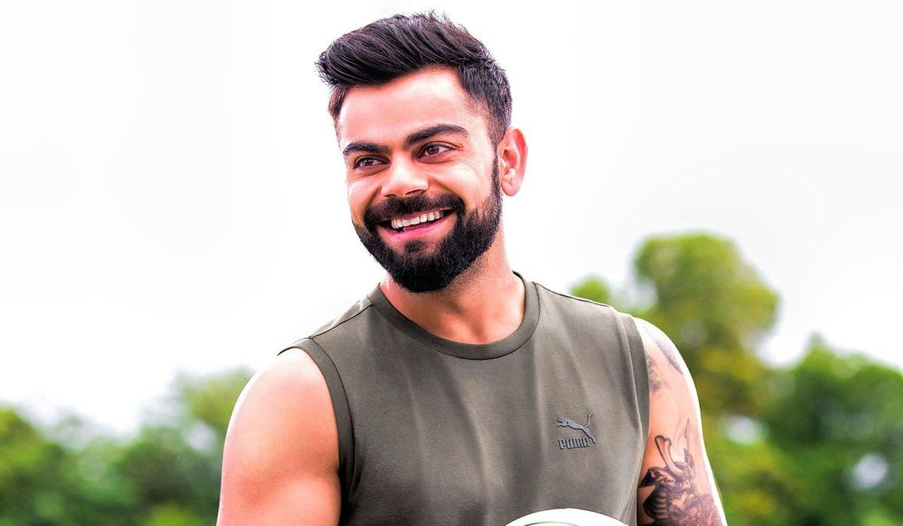

Facts should be known about ViratKohli
28th October 2023 Virat Kohli is a renowned Indian cricketer, born on November 5, 1988. He's known for his exceptional batting skills and exceptional consistency. Kohli has led the Indian cricket team, setting numerous records and achieving great success in both Test and limited-overs formats. His passion, dedication, and leadership make him a prominent figure in the world of cricket.
Facts about ViratKohli
Early life :Virat Kohli was born on November 5, 1988, in Delhi, India, and began playing cricket from a young age.
Academic Journey :Virat Kohli attended Vishal Bharti Public School in Delhi and later joined the West Delhi Cricket Academy. His dedication to cricket led him to leave his formal education to focus on his cricketing career.
Cricket Jounery :Virat Kohli's cricket journey began in Delhi. He rose through the ranks, representing India at every level, ultimately becoming a cricket icon.
Captaincy Jounery :Virat Kohli was named captain of the Indian cricket team in limited-overs formats in 2013 and Test format in 2014.
King of cricket :Kohli is dubbed "King of Cricket" due to his remarkable consistency, extraordinary batting skills, and inspirational leadership.
Brand-Ambassador Virat Kohli has been an ambassador for brands like Puma, Audi, MRF, and many more, reflecting his global appeal.
Virat Kohli is an iconic Indian cricketer, known for his exceptional batting, leadership, and global influence in the world of sports.